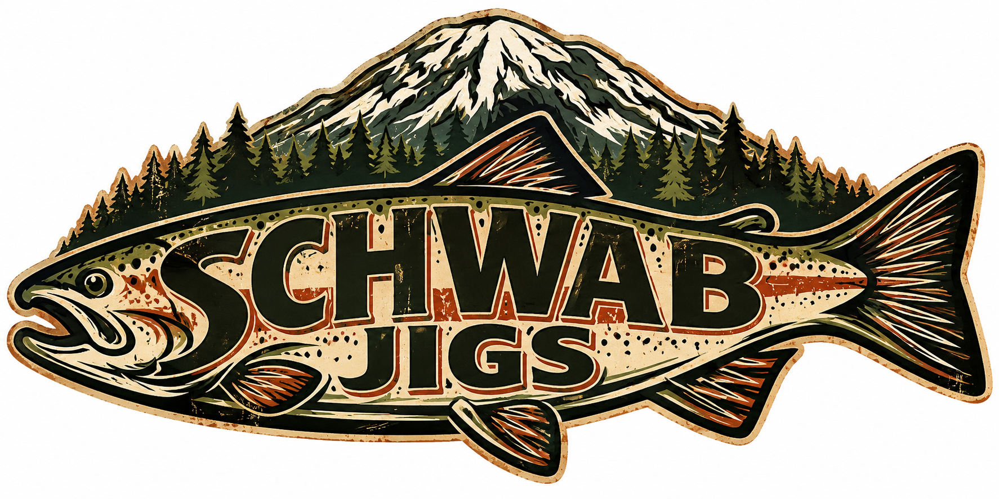

02 / THE FISHING SIDE
Schwab
Jigs.
Made for people who measure a good day in casts, catches and stories. Take a look at the fishing side of Schwab.
Ask about jigs
JIGS & WORKSHOP
Gear in the making.
Actual photos from the source collection.
Looking for a particular jig?
Colors, weights, styles, pricing and availability are not yet published. Reach out to Robert for current information.
Ask RobertSCHWAB JIGS
Keep the next cast close.
From a favorite fishing spot to the next trip on the calendar, it's always about getting back to the water.
See the fishing gallery ↗